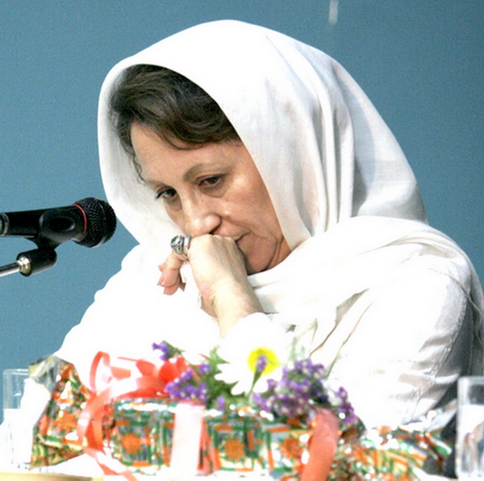

پذيرش > تریبون > مقالات > عدالت و قانون حمایت خانواده /دکتر ناهید توسلی


 عدالت و قانون حمایت خانواده /دکتر ناهید توسلی عدالت و قانون حمایت خانواده /دکتر ناهید توسلی
1 بهمن 1388 - - نسخه قابل چاپ
تغییر برای برابری - کمیسیون حقوقی قضایی مجلس بارها تاکید کرده است که برای تصویب لایحه «حمایت از خانواده» جانب عدالت را مراعات خواهد کرد. اما چرا ما کماکان شاهد تصویب مواد تبعیض آمیز در این کمیسیون به نفع مردان هستیم؟
من نمی دانم در کمیسیون حقوقی و قضایی مجلس، آیا اساسا نمایندۀ زن وجود دارد یا خیر؟ البته این که نمی دانم مشکل من است که به سراغ آن نرفته ام و این که چرا به سراغ آن نرفته ام به این دلیل است که در ذهنیت من زن و مرد، در جامعه هیچ گونه جایگاه جنسیتی در امور اجتماعی، حقوقی، قضایی و ... و... نباید داشته باشند. زنان و مردان تواما می توانند در همه کمیسیون ها در مجلس حضور داشته باشند. اما تعداد دوازده یا سیزده نمایندۀ زن در مقابل حدود سیصد نماینده مرد در مجلس ایران، از آغاز نشانگر عدم توجه و احساس عدم نیاز به حضور فیزیکی و حضور فکری/ اندیشه ای زن در تصمیم گیری های سیاسی/ اجتماعی/ فرهنگی و ... زنان بوده است.
جامعۀ ایران، مانند بسیاری از جوامع شرق و به ویژه جوامع کشورهای مسلمان، جامعه ای مردمحور و مردسالار است. در چنین جوامعی به دلیل اقتدار و محوریت مدیریت مردانه (چه در خانه و در عرصۀ خصوصی و چه در جامعه و عرصۀ عمومی) این مرد است که حرف آخر را می زند. اگر هم در پارلمان های برخی کشورهای هنوز مردمحور که یکی از آن ها ایران است، ما می بینیم که زنان در برخی امور و پست های «مردشناخته شده» (و نه مردانه) حضور دارند بیشتر باید آن را نوعی تعارف برای وجهۀ بین المللی تلقی کنیم. گرچه پافشاری زنان برای احقاق حقوق انسانی/ اجتماعی شان، خود یک مولفه برای این حضور است ولی – حداقل – من آن را جدی تلقی نمی کنم.
نمونه اش همین لایحه حمایت از خانواده است که می خواهد در فضایی کاملا مردانه بررسی، تدوین و بعد هم تصویب شود! چه انتظاری می رود که ما شاهد تصویب مواد تبعیض آمیز در آن به نفع مردان نباشیم؟ غیر از این اگر می بود جای پرسش داشت! در جامعه ای که دختر، در هر سن و سال و در هر مرتبۀ دانش و رتبۀ اجتماعی که می خواهد باشد، برای ازدواج نخست اش باید اجازه پدر و اگر هم ایشان حیات نداشتند اجازه جد پدری و اگر آن هم نه، با اجازۀ نمایندۀ قانون و امثالهم «ازدواج» کند و پس از ازدواج هم برای خروج از کشور نیاز به اجازه شوهر داشته یاشد؛ مسلم است که میزان و معیار حقوق اجتماعی/ اقتصادی/ فرهنگی و... دیگرِ خود را نیز باید «مرد» برایش تعیین کند. خُب شما هم اگر بودید (البته در باورمندی به فرهنگ مردانه) می بایست نخست به منافع خود می اندیشیدید؟
بنابراین رعایت جانب «عدالت»، اینجا در فرهنگ مردانه معنا و مفهوم قرآنی اش را ندارد. در حالی که «عدالت» اسلامی در مورد ازدواج و زندگی زن و مرد، دقیقا همان «عدالت»ی است که در قرآن در مورد ازدواج دوم مرد از سوی خداوند تعلیق به محال شده است: آیه 3 سورۀ نساء، که عملاً مفاد آن تعلیق به محال است، زیرا با وجود ذکر «عدالتِ» مشروط برای مردی که می خواهد بیش از یک زن داشته باشد، اما خود قرآن آن را رد می کند: «....فان خفتم الا تعدلو فواحدة او ما ملکت ایمانکم....» (... پس اگر بیم دارید که به عدالت رفتار نکنید به یک [زن آزاد] یا به آن چه [ازکنیزان] مالک شده اید [اکتفا کنید]...) و نیز آیه 129 سوره نساء که در آن حا هم عملاً قرآن به عدم توانایی مرد در رعایت عدالت تائید و تاکید می کند: «و لن تستطیعوا ان تعدلوا بین النساء و لوء حرصتم....» (و شما هرگز نمی توانید میان زنان عدالت کنید هرچند [بر عدالت] حریص باشید!.....) (ترجمه محمد مهدی فولادوند).
حالا معلوم نیست که کمیسیون حقوقی و قضایی مجلس شورای اسلامی چگونه می خواهد این عدالت را «عملی» سازد که قول آن را به زنان و به خانواده ها داده است؟ بگذریم از این که اساساً معلوم نیست چه انگیزه ای موجب شده است که مجلس و دولت، در این مقطع و با این همه کارهای مهم داخلی و خارجی یکباره به سراغ لایحه حمایت از خانواده رفته و بیش از همه کمیسیون حقوقی و قضایی در صدد به اصطلاح اصلاح ماده 23 بروند؟
وقتی سال گذشته خبر احتمال تصویب لایحه حمایت از خانواده منتشر شد گروه های مختلف زنان از طیف های فکری متفاوت گرد هم آمدند و به تصویب آن اعتراض کردند، اما در شرایط کنونی و با به صدا در آمدن زنگ خطر تصویب لایحه در صحن علنی مجلس، ما شاهد سکوت گروه های اصولگرا، گروه های اصلاح طلب و نیز حتی جنبش زنان هستیم. مسلماً دلیل آن هم مشخص است: شرایط فعلی جامعه.! زیرا هیچ یک از گروه های مختلف فعال زنان - به نظر من - تصور این را هم نداشتند که در این مقطع و با این شرایط که بسیاری از فعالان جنبش های مدنی و جنبش زنان در بند هستند، کمیسیون حقوقی و قضایی مجلس به اصلاح و تصویب لایحه حمایت از خانواده و مادۀ مهمی از آن (که هیچ ضرورتی در این شرایط طرح آن را تائید نمی کند) بپردازد!، مصویه ای که برای تصویب آن می بایست رایزنی های تخصصی بسیاری با حضور برابر متخصصین زن و مرد در امور حقوقی، قضایی، فرهنگی، روان شناسی، جامعه شناسی، پزشکی و ... صورت بگیرد.
آیا به نظر نمی رسد که بهتر است در این شرایط ، فعالان گروه های اصولگرا و همچنین اصلاح طلب جنبش زنان، چه گروهی و چه فردی، نظرات شان را طی یادداشت هایی به کمیسیون حقوقی و قضایی مجلس و نیز به ریاست مجلس اعلام کننند و برای تاخیر در ارائۀ لایحه حمایت از خانواده در صحن مجلس، در خواستِ مهلت برای فرصت مناسب تری کنند؟
یکی از موارد پرسش برانگیز دیگر این است که چرا کمیسیون حقوقی و قضائی مجلس تنها به ارائه جزئیات حقوقی ماده 23 پرداخته و به امور قضایی آن نپرداخته است؟ یکی از اعضای کمیسیون حقوقی و قضایی مجلس در مصاحبه ای با یکی از روزنامه های صبح، در رابطه با این پرسش که: «آيا براي مردي که بدون اين که همسرش اين شرايط را داشته باشد، همسر دوم اختيار کند، مجازاتي نيز در نظر گرفته مي شود يا خير، گفت؛ ما هنوز به مجازات ها نرسيده ايم اما حتماً براي ضمانت اجرايي اين ماده مجازاتي براي مردان در نظر گرفته مي شود» پاسخ داده اند که: ؛ «ما هنوز به مجازات ها نرسيده ايم اما حتماً براي ضمانت اجرايي اين ماده مجازاتي براي مردان در نظر گرفته مي شود» (روزنامه اعتماد 12/10/ 88 ص 14)
چگونه مصوبه ای در کمیسیون حقوقی و قضایی مجلس، که دو مورد را باید بررسی کند، تنها پس از بررسی یک مورد آن، عضوی از آن کمیسیون اذعان می کنند که: «ماده 23 لايحه حمايت از خانواده با اضافه کردن شروطي به آن روز پنجشنبه در کميسيون حقوقي و قضايي تصويب شد.»؟ (اعتماد- همان)
بی شک زنان منتظر این ننشسته اند تا شاهد مجازات همسران شان باشند! خیر!!
زنان، بیش از هر چیز علاقه مند هستند تا سهم برابر و عادلانه ای در مورد اصلاحات قانون حمایت از خانواده به عنوان «دو نیم برابر» در «واحد خانواده» داشته باشند.
ارسال به
بالاترین
،
توییتر
،
فریندفید
،
فیسبوک
در همين بخش :
 دهمین دورۀ مراسم تندیس صدیقه دولت آبادی ۱۳۹۲ دهمین دورۀ مراسم تندیس صدیقه دولت آبادی ۱۳۹۲
کارت پستالهایی به بهانهی هشت مارس و به یاد همهی مبارزین راه برابری
بیانیه بیش از 350 تن از مدافعان حقوق زنان به مناسبت روز جهانی زن؛ زنان هر روز فرودستتر میشوند
لباسی که برای تن ما دوخته اند! /اعظم بهرامی
چالشها و چشمانداز فعالیت مدنی زنان
ديگر بخش ها :
طرح یک میلیون امضا
|
مقالات
|
سایت نوشته ها
|
اخبار
|
گزارش كمپين
|
گفت و گو
|
علیه سکوت
|
كوچه به كوچه
|
نامه های شما
|
گزارش ویژه
|
گفتگو با اعضا
|
ویژه سالگرد کمپین
|
تصویر برابری
|
دل آرام علی
|
تریبون
|
مقالات
|
تاریخ شفاهی
|
خارج از چارچوب
|
کتابخانه
|
درباره کمپین
|
کمپین در شهرها
|
کمپین در بند
|
صدای تغییر
|
ویژه 22 خرداد
|
لایحه حمایت از خانواده
|
گالری
|
عشا مومنی
|
امیر یعقوبعلی
|
خدیجه مقدم
|
راحله عسگری زاده و نسیم خسروی
|
پروین اردلان،جلوه جواهری، مریم حسین خواه، ناهید کشاورز
|
زینب پیغمبرزاده
|
سعیده امین، سارا ایمانیان، محبوبه حسین زاده، ناهید کشاورز و همایون نامی
|
احترام شادفر
|
نسیم سرابندی زاده،فاطمه دهدشتی
|
وبلاگ مهمان
|
پرونده خرم آباد
|
دستگیری ها
|
مریم مالک
|
پرستو اللهیاری
|
مهرنوش اعتمادی
|
سمیه رشیدی
|
Other Languages
|
همراهان
|
«فراخوان کمپین ده روز با بهاره هدایت»
| English
|